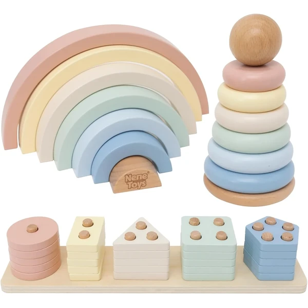
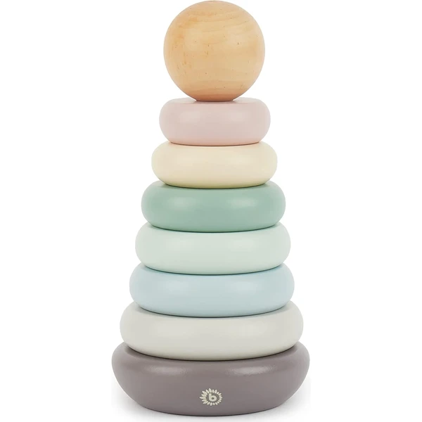
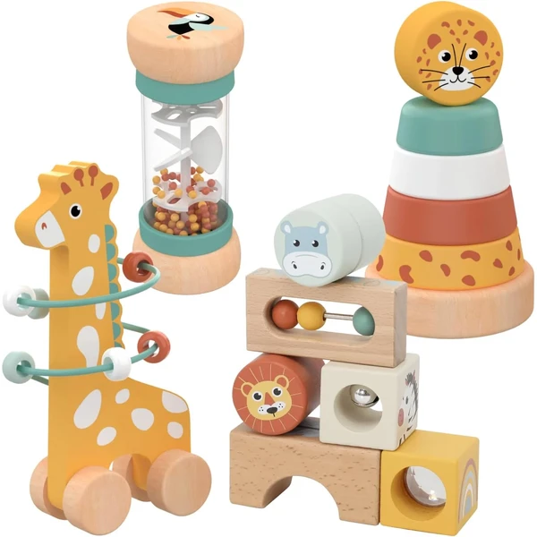
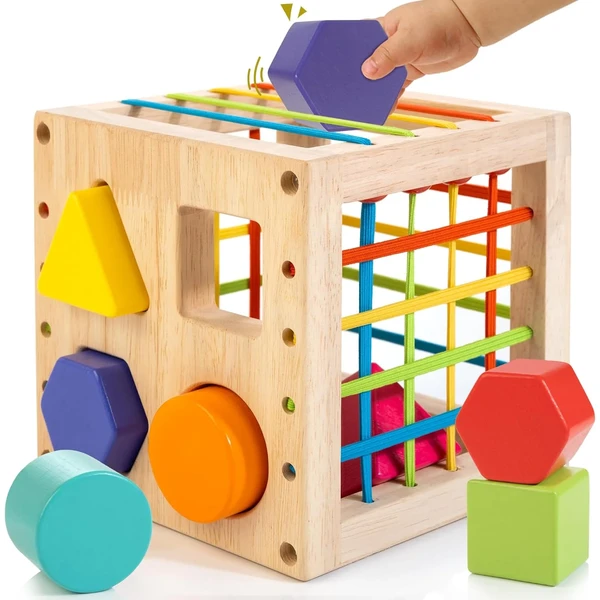
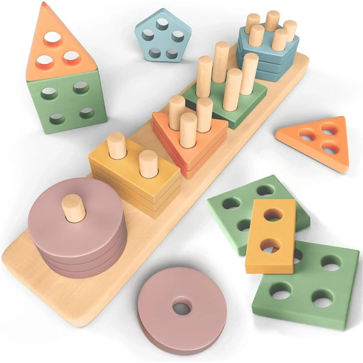
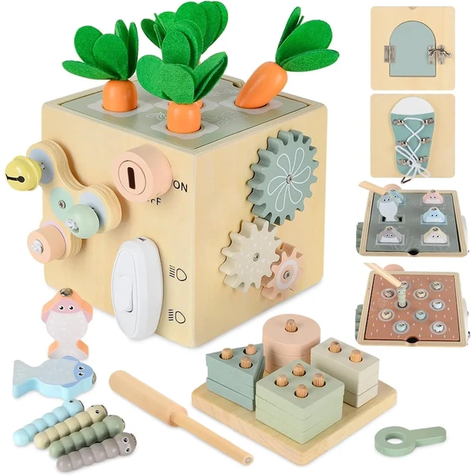
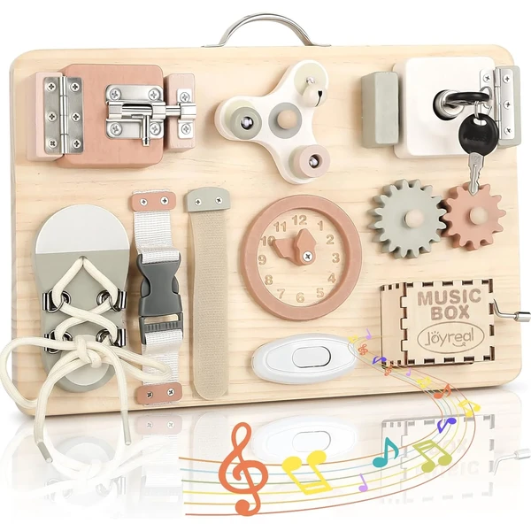
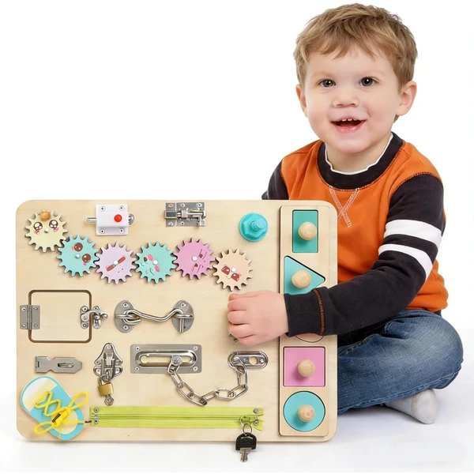
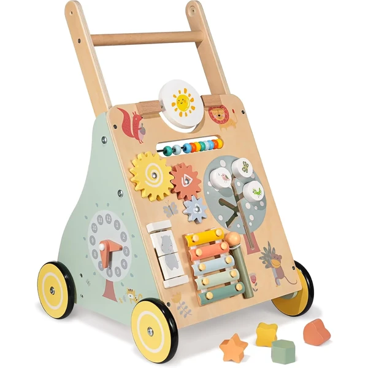
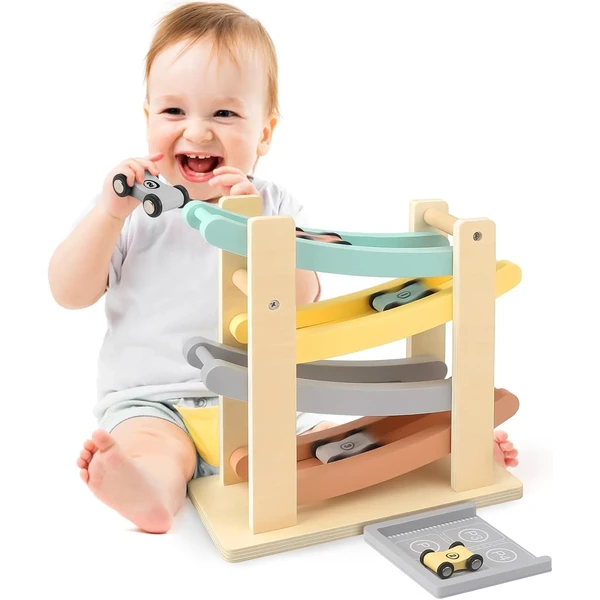

Arcoíris de madera 3 en 1
Set de tres juguetes Montessori de madera en uno: arcoíris apilable, torre y juego de encaje, presentados en tonos pastel. Pensado para trabajar la motricidad fina, la coordinación mano-ojo y el reconocimiento de formas y colores desde el año.
⭐ ¿Por qué nos gusta?
- ✔ Reúne tres juguetes Montessori en un set coordinado.
- ✔ Colores pastel suaves, poco sobreestimulantes.
- ✔ Piezas gruesas, fáciles de agarrar para manos pequeñas.
💬 Lo que más destacan las familias
Las familias destacan el acabado en madera y los tonos pastel, y que da para varias formas de juego dentro del mismo set.
Edad recomendada: 1-2 años
Ver en Amazon

Torre arcoíris apilable Bieco
Torre apilable de madera con ocho anillas en forma de arcoíris, en colores suaves de estética escandinava. Un clásico Montessori para apilar, ordenar por tamaño y trabajar el equilibrio y la coordinación.
⭐ ¿Por qué nos gusta?
- ✔ Ocho piezas de madera maciza, estables al apilar.
- ✔ Colores suaves, estética escandinava.
- ✔ Favorece el orden por tamaño y color.
💬 Lo que más destacan las familias
Se valora la calidad de la madera y que las piezas encajen bien entre sí, dando una torre estable incluso para los más pequeños.
Edad recomendada: 1-2 años
Ver en Amazon

Set 4 en 1 sensorial Nene Toys
Set Montessori de madera 4 en 1 con bloques sensoriales, un bastón de lluvia visual, una jirafa con laberinto de cuentas y una torre de anillos. Combina distintas actividades sensoriales y de motricidad fina en un mismo pack.
⭐ ¿Por qué nos gusta?
- ✔ Cuatro juguetes distintos en un solo set.
- ✔ Bastón de lluvia con efecto visual relajante.
- ✔ Laberinto de cuentas para la motricidad fina.
💬 Lo que más destacan las familias
Las familias destacan la variedad de actividades del set y que mantiene entretenido al niño con propuestas distintas cada vez.
Edad recomendada: 1-2 años
Ver en Amazon

Cubo clasificador de formas Winique
Cubo clasificador de formas de madera maciza, con piezas que se introducen a través de cintas elásticas cruzadas. Ayuda a trabajar el reconocimiento de formas y la motricidad fina mientras el niño empuja y encaja cada pieza.
⭐ ¿Por qué nos gusta?
- ✔ Varias formas de juego con las cintas elásticas.
- ✔ Madera maciza natural, resistente.
- ✔ Favorece el reconocimiento de formas.
💬 Lo que más destacan las familias
Es de los clasificadores más comentados por su resistencia y por ofrecer varias formas de juego más allá del simple encaje.
Edad recomendada: 1-2 años
Ver en Amazon

Set apilamiento y selección Sweety Fox
Juguete Montessori de apilamiento y selección de formas en colores pastel, pensado para actividades de clasificación y desarrollo multisensorial entre el primer y el tercer año.
⭐ ¿Por qué nos gusta?
- ✔ Combina apilamiento y clasificación de formas.
- ✔ Colores suaves y relajantes.
- ✔ Materiales seguros para el bebé.
💬 Lo que más destacan las familias
Es uno de los sets más comentados por la relación entre precio y horas de juego, y por lo bien que aguanta el uso diario.
Edad recomendada: 1-2 años
Ver en Amazon

Cubo de actividades Anook
Cubo de actividades de madera con diez propuestas distintas para trabajar habilidades básicas y estimulación sensorial en un mismo mueble compacto. Pensado para acompañar del primer al segundo año con distintos tipos de juego.
⭐ ¿Por qué nos gusta?
- ✔ Diez actividades distintas en un mismo cubo.
- ✔ Materiales seguros y fáciles de guardar.
- ✔ Favorece el aprendizaje de habilidades básicas.
💬 Lo que más destacan las familias
Al tratarse de un cubo con varias actividades, permite ir cambiando de juego sin necesidad de sacar varios juguetes distintos.
Edad recomendada: 1-2 años
Ver en Amazon

Busy board Joyreal con cerradura
Busy board de madera con doce actividades de vida práctica: cerradura con llave, pestillos, cordones y otros mecanismos cotidianos. Un tablero portátil pensado para ejercitar la motricidad fina imitando gestos del día a día.
⭐ ¿Por qué nos gusta?
- ✔ Doce mecanismos distintos de vida práctica.
- ✔ Formato portátil, fácil de llevar de viaje.
- ✔ Incluye cerradura y llave reales.
💬 Lo que más destacan las familias
Las familias destacan que mantiene entretenido al niño durante bastante tiempo gracias a la variedad de mecanismos que incluye.
Edad recomendada: 1-2 años
Ver en Amazon

Busy board NUKied de madera
Tablero busy board de madera con catorce mecanismos de vida práctica, pensado para el juego sensorial y el desarrollo de habilidades tempranas. Una alternativa con más actividades para seguir practicando destrezas manuales.
⭐ ¿Por qué nos gusta?
- ✔ Catorce mecanismos distintos de vida práctica.
- ✔ Madera lijada suave, segura al tacto.
- ✔ Favorece el juego calmado y concentrado.
💬 Lo que más destacan las familias
Se valora tener un tablero con más actividades que otros busy boards similares, ideal para alargar el interés del niño.
Edad recomendada: 1-2 años
Ver en Amazon

Andador de madera con actividades
Andador de madera multifuncional con ocho actividades incorporadas, pensado para acompañar los primeros pasos y servir después como mesa de actividades. Incluye un asa fácil de agarrar para ganar seguridad al caminar.
⭐ ¿Por qué nos gusta?
- ✔ Combina andador y mesa de actividades.
- ✔ Ocho actividades distintas incorporadas.
- ✔ Madera contrachapada de abedul resistente.
💬 Lo que más destacan las familias
Las familias destacan que sirve primero como andador y después como mesa de actividades, alargando su vida útil.
Edad recomendada: 1-2 años
Ver en Amazon

Pista de bolas de madera Vanplay
Pista de madera en colores pastel por la que el niño hace rodar bolas o coches pequeños, favoreciendo la coordinación y la comprensión de causa y efecto desde el primer año.
⭐ ¿Por qué nos gusta?
- ✔ Colores pastel suaves, poco recargados.
- ✔ Favorece la coordinación y la causa-efecto.
- ✔ Madera ecológica y resistente.
💬 Lo que más destacan las familias
Se valora que sea un juego sencillo pero que mantiene al niño entretenido repitiendo la misma acción una y otra vez.
Edad recomendada: 1-2 años
Ver en Amazon